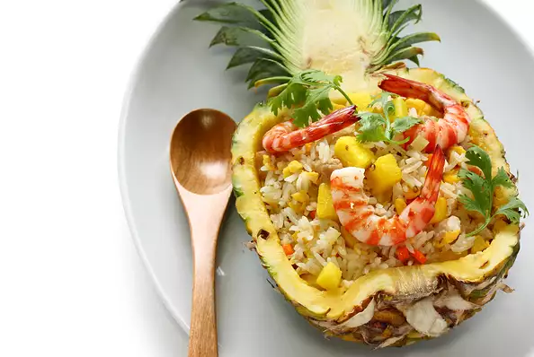

Pineapple-Shrimp Fried Recipes

Description
Jasmine rice is stir-fried with shrimp, ham, veggies, and pineapple for an easily thrown together, Asian-inspired meal.
Ingredients
- 2 tablespoons coconut oil
- 1 medium onion, diced
- 1 small carrot, diced
- 2 cloves garlic, minced
- ½ cup uncooked medium shrimp, peeled and deveined
- ½ cup diced ham
- 4 cups cooked jasmine rice
- 1 tablespoon soy sauce (such as Chinatown)
- salt and ground black pepper to taste
- 1 ½ cups diced pineapple
- 1 small tomato, diced
- 3 green onions, thinly sliced
Steps
- Melt coconut oil over medium-high heat in a large frying pan. Add onion, carrot, and garlic; stir-fry until tender, about 3 minutes. Add shrimp and ham; stir-fry until shrimp are almost cooked through, about 2 minutes. Add rice and soy sauce and continue to cook and stir for 1 minute. Season with salt and pepper and remove from heat.
- Stir pineapple, tomato, and green onions into fried rice mixture until thoroughly combined.